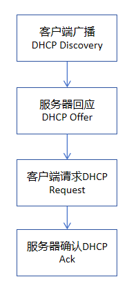

VLAN配置命令
问题导入： "划分vlan后，不同部门（不同VLAN）的电脑的设备仍然需要相互通信（如研发部需要访问财务部服务器），如何让不同VLAN的设备跨网通信呢？"
答案："配置单臂路由"
如图所示，通过路由器的一个物理接口，使用子接口（逻辑接口,如图中f0/0.1）实现多个VLAN之间的通信。路由器与交换机之间通过 trunk 链路连接，承载所有VLAN的数据。

问题导入： "随着公司的发展，极客公司在总部的基础上，创办了分部，总部和分部分属两个网络，如何实现两个网络的互连互通呢?"
如图所示，总部和分部通过网关路由器相互连接，网关路由器通过查询路由转发表，根据目标IP地址，对接收到的IP数据分组进行转发，实现两个网络之间的数据通信
路由转发表的建立方式：静态方式、动态方式
静态方式："由管理员手动在路由器上配置、更新和维护路由条目。"
动态方式："由路由器执行路由协议自动进行路由条目的建立、更新和维护"

静态路由配置命令
问题导入： "公司规模进一步扩大，增加了多个分部，网络拓扑变得复杂，链路增减成为常态。手动维护路由表已不现实。怎么办？"
路由器通过运行路由协议自动交换路由信息，计算并维护路由表。
分类："根据作用范围的不同，分为内部网关协议（IGP)和外部网关协议(EGP)"

RIP协议配置命令
OSPF协议配置命令
BGP协议配置命令（双AS跨部门场景）
极客科技场景需求：北京总部（192.168.1.0/24）与上海分部（192.168.2.0/24）需跨地域联网，租用运营商的专线（如SDH），但普通路由接口无法直接适配专线链路，且需要验证双方身份避免链路被冒用，如何实现安全、稳定的跨地域连接？
答案：配置广域网PPP协议（点到点协议），支持专线链路适配+身份验证（PAP/CHAP），保障跨地域连接安全。
PPP协议核心配置命令（总部路由器）
极客科技场景需求：随着公司员工增加，IT部门每天要处理3类高频问题：①新员工电脑需手动配置IP、网关，耗时且易出错；②研发部需要上传代码到服务器，市场部需要下载宣传素材，缺乏统一文件传输工具；③员工记不住“192.168.1.100”这种IP地址，访问公司官网（内部版）时经常输错。如何通过网络应用配置解决这些问题？
答案：部署DHCP、FTP、DNS、Web、Email 5类核心应用服务，实现“自动配网、高效传文件、易记地址访问”。
应用配置阶段实验作业（必做）：完成上图拓扑中应用配置，撰写实验报告，并从优慕课-课程活动-课程作业中，找到对应作业提交，点击下面的链接下载实验报告模版
点击下载应用配置实验报告模版作业实验报告提交方式：优慕课-计算机网络基础（张玉）-单元学习-实验-实验十
问题导入： "极客公司的财务服务器（192.168.30.10）存储敏感数据，需要禁止市场部（192.168.20.0/24）访问，但允许研发部（192.168.10.0/24）和总部管理端(192.168.1.0/24)访问，如何实现？"
答案："配置ACL（访问控制列表），按源IP/目标IP限制网络访问"
1. 标准ACL配置格式（控制源IP）
2. 扩展ACL配置格式（控制源IP+目标IP+端口）
关键说明：反掩码与子网掩码互补（如/24子网的反掩码为0.0.0.255），eq表示“等于某个端口”（如eq 80对应HTTP服务）。
示例1：标准ACL配置（禁止市场部访问财务网段）
示例2：扩展ACL配置（不允许市场部访问财务服务器）
问题导入： "极客公司员工需要在家远程办公，需访问公司内部服务器（192.168.1.100/24），但互联网传输数据不安全，如何实现安全的远程访问？"
答案："配置VPN（虚拟专用网络），在公网中建立加密隧道，实现安全远程连接"
通过公网（如互联网）建立的"加密专用通道"，让远程设备（如家庭电脑）像在公司内部网络一样访问资源，数据传输全程加密，防止泄露。
本实验采用：IPsec VPN（企业常用，基于IP层加密）
IPsec VPN配置命令（公司出口路由器：bj-路由器，适配拓扑）

数据流分析工具命令
Wireshark抓包分析命令/操作
局域网孤岛
极客公司创建初期，规模小巧，仅在城市一角设一间简约办公室。几名核心成员怀揣技术理想，无明确分工、并肩协作，在此开启逐梦之路。
问题导入： "办公室内的员工的电脑需要互联互通，怎么办？"
虚拟局域网(VLAN)
随着公司规模扩大，北京总部办公室人员增多，部门划分更细致（研发部、市场部、财务部），所有设备连接在同一台交换机上导致广播风暴和安全隐患。
问题导入： "如何在同一台物理交换机上，将不同部门的设备隔离开，就像它们在不同的物理网络中一样？同时又能让部门内部通信不受影响？"
将一个物理局域网在逻辑上划分成多个不同的广播域（子网络），实现隔离广播、增强网络安全性、提高带宽利用率的技术。
VLAN的核心作用
- 广播控制：限制广播帧只在本VLAN内传播，避免广播风暴
- 安全隔离：不同VLAN设备默认无法直接通信，保护敏感部门数据
- 灵活管理：设备可以根据部门需求划分到不同VLAN，不受物理位置限制
VLAN类型
静态VLAN
由管理员手动将交换机接口分配给特定VLAN
优点：安全可靠，易于监控
缺点：设备移动时需要重新配置
动态VLAN
基于MAC地址、IP地址或用户账号自动分配VLAN
优点：设备移动时自动适应
缺点：配置复杂，需要额外服务器支持
VLAN间通信
不同VLAN之间默认无法通信，需要通过路由器或三层交换机实现互通，这一过程称为"VLAN间路由"。
具体配置方法查看下一阶段“网络互联”中的"单臂路由"
网络互联
单臂路由
单臂路由工作原理
- 交换机通过 trunk 链路将带有VLAN标签的数据发送到路由器
- 路由器的子接口根据VLAN标签识别不同网络
- 路由器进行路由转发，实现不同VLAN间的数据交换
- 返回数据通过原路径发送回对应VLAN的设备
单臂路由配置命令
静态路由
当路由表中没有匹配的具体路由条目时，用于转发数据包的路由（通配符0.0.0.0 0.0.0.0）。
总部路由器路由表示例
| 目标网络 | 子网掩码 | 下一跳 | 出口接口 |
|---|---|---|---|
| 192.168.1.0 | 255.255.255.0 | 直接连接 | Fa0/0 |
| 192.168.2.0 | 255.255.255.0 | 20.0.0.2 | Fa0/1 |
| 0.0.0.0 | 0.0.0.0 | 20.0.0.2 | Fa0/1 |
静态路由特点
优点： 简单、精确、不占用网络资源、安全。
缺点： 不能自动适应网络变化。
内部网关协议(IGP)
用于在同一个自治系统内部(AS)交换路由信息的动态路由协议
网络世界的 “独立行政区”
自治系统（Autonomous System，简称 AS）是互联网中由单一机构（如企业、运营商、高校）管理、遵循统一路由策略的独立网络集合，可以通俗理解为网络世界里的 “独立行政区”—— 有自己的 “管理规则” 和 “对外联络方式”，内部自主管理，外部通过固定 “接口” 与其他 “行政区”（其他 AS）互联互通。
常见IGP协议对比
RIP (路由信息协议)
类型： 距离矢量协议
工作原理： 像"传话游戏"，每个路由器只告诉邻居自己到各网络的距离（跳数）
优点： 配置简单，易于理解
缺点： 最大跳数15跳，收敛速度慢，可能产生路由环路
适用场景： 小型网络，拓扑简单
RIP协议详细介绍OSPF (开放最短路径优先)
类型： 链路状态协议
工作原理： 像"实时共享的电子地图"，所有路由器有相同的全网拓扑图
优点： 收敛速度快，无跳数限制，支持分层设计
缺点： 配置复杂，资源消耗较大
适用场景： 大型复杂网络
OSPF协议详细介绍总部网关路由器路由表 (OSPF)
外部网关协议(EGP)
BGP协议是典型的EGP类协议。
BGP协议详细介绍动态路由（EGP协议）核心说明
核心目标：理解外部网关协议（EGP）的跨自治系统路由传递原理，了解BGP协议基础配置。
关键知识点：EGP适用场景（不同自治系统之间）、BGP（边界网关协议）、AS号（自治系统号）、BGP邻居（对等体）。
操作要点：配置BGP进程和AS号，建立BGP邻居关系，宣告本自治系统的网段，验证BGP路由传递。
特点：BGP是路径矢量协议，注重路由的“可达性”而非“最短路径”，适用于互联网级路由。
广域网PPP协议
极客公司规模扩大后，北京总部与上海分部需跨地域传输业务数据（如研发部代码、市场部素材），但互联网传输不稳定，因此租用运营商的“专线链路”（如SDH/DDN）。普通路由器默认使用HDLC封装，无法适配专线，且缺乏身份验证，存在链路被冒用的风险——PPP协议正是解决这两个问题的核心技术。
PPP（Point-to-Point Protocol，点到点协议）是广域网中常用的链路层协议，核心作用：
- 链路适配：支持专线、拨号等多种广域网链路，替代路由器默认的HDLC（仅支持同品牌设备）；
- 身份验证：提供PAP（明文验证，简单）和CHAP（加密验证，安全），防止链路被非法设备接入；
PPP与网络互联的逻辑关系
在极客公司场景中，PPP是“网络互联”的链路基础：
- 第一步：通过PPP配置专线链路（北京总部Serial 2/0 ↔ 上海分部Serial 2/0），确保物理链路能通；
- 第二步：在PPP链路基础上，配置动态路由（如OSPF），实现总部192.168.1.0与分部192.168.2.0的互通；
- 简单说：PPP解决“链路能不能通”，路由解决“数据往哪传”。
验证方法：
- 1. 接口状态验证：执行
show ip interface brief，查看Serial接口状态为“up/up”（表示PPP链路已建立）； - 2. 身份验证：执行
show ppp authentication，查看CHAP验证状态为“SUCCEEDED”（表示验证通过）； - 3. 连通性验证：总部路由器ping分部路由器互联IP（20.0.0.2），能通则PPP链路正常。
实践要求：结合讲解视频，完成左侧网络中北京总部与深圳分部、上海分部与深圳分部的PPP配置。
验证方法：用不同网络中的主机进行互ping操作，看是否能够ping通。
应用配置
DHCP服务配置
DHCP协议详细介绍- 作用：自动给电脑分配IP、网关、DNS，无需手动配置
- 关键参数：IP地址池、子网掩码、默认网关、DNS服务器、租约时间
- 核心工作机制： 
- 单一服务器部署：适用于单个物理子网的小型局域网。部署简单，但存在单点故障风险。
- 多服务器高可用部署：对于中大型网络或要求高可用的环境，建议至少部署两台DHCP服务器。
要使DHCP服务覆盖多个子网，需要特殊配置。
- 使用DHCP中继代理：当DHCP服务器与客户端位于不同子网时，需要在客户端所在子网的路由器或特定服务器上配置DHCP中继代理（也称IP帮助地址）。中继代理负责转发DHCP广播报文，使其能够到达另一子网的DHCP服务器。
路由器DHCP配置
🌐路由器完全可以配置DHCP服务。这实际上是现代路由器一项非常核心且常用的功能，它能自动为网络中的设备分配IP地址
实践要求：结合讲解视频，完成左侧网络的DHCP服务器配置，实现分部1中主机IP的自动配置。
验证方法：电脑设置“自动获取IP”，查看是否拿到配置的IP地址。
DNS服务配置
DNS协议详细介绍- 作用：将易记的域名（如www.geektech.com）转换成IP地址
- 关键操作：配置域名与IP的映射关系
DNS配置命令
实践要求：结合讲解视频，完成左侧网络的DNS服务器配置，具体参数如下：
总部-www服务器的域名：www.jike.com
EMAIL服务器的域名：email.jike.com
FTP服务器的域名：ftp.jike.com
分部1-www服务器的域名：www.fenbu1.jike.com
分部2-www服务器的域名：www.fenbu2.jike.com
验证方法：网络中任意主机通过ping域名都可以访问到对应IP的服务器设备。
FTP服务配置
FTP协议详细介绍- 作用：实现文件上传、下载，方便部门间共享素材
- 默认端口：21（控制端口）
- 关键操作：启用FTP服务、创建登录账号密码
FTP配置命令
实践要求：结合讲解视频，完成左侧网络的FTP服务器配置，添加账户为个人姓名全拼，密码为学号后三位
验证方法：用FTP客户端输入服务器IP、账号密码，能上传/下载文件则成功。
WWW服务配置
万维网www详细介绍- 作用：搭建公司内部网站，展示信息或提供系统访问
- 默认端口：80
- 关键操作：启用HTTP服务、配置网站内容
WWW配置命令
实践要求：结合讲解视频，完成左侧网络的三个www服务器配置，并对各服务器首页内容进行更改，总部改为：welcome to jike's webset! 分部1改为：welcome to jike fenbu1's webset! 分部2改为：welcome to jike fenbu2's webset!
验证方法：浏览器输入http://服务器IP（如http://192.168.1.100）或者域名，能打开网页则成功。
Email服务配置
电子邮件详细介绍- 作用：搭建公司内部邮箱系统，员工间发送邮件
- 关键参数：域名（如geektech.com）、邮件服务器IP
Email配置命令
实践要求：结合讲解视频，完成左侧网络的EMAIL服务器配置，将服务器域名设置为jike.com,添加zhangsan@jike.com和lisi@jike.com两个账号,密码为学号后三位。选择两台电脑设置email client，进行账号和服务器设置
验证方法：用邮件客户端配置账号，能发送/接收内部邮件则成功。
网络安全
防火墙ACL
什么是ACL？- ACL分类：标准ACL（控制源IP）、扩展ACL（控制源IP+目标IP+端口）
- 应用方向：inbound（入站，数据进入接口时检测）、outbound（出站，数据离开接口时检测）
- 匹配顺序：ACL规则自上而下执行，一旦匹配立即生效，后续规则不再执行
路由器的"访问规则清单"，通过允许/拒绝特定IP、端口的数据包，控制不同网段间的访问权限，保护内部敏感资源（如财务服务器）。
核心原则：默认拒绝所有，只允许需要的访问（最小权限原则）
编号与ACL类型对应关系：
- 标准ACL（仅控制源IP）：编号 1-99 或 1300-1999
- 扩展ACL（控制源IP+目标IP+端口）：编号 100-199 或 2000-2699
配置原则：标准ACL尽量靠近目标设备，扩展ACL尽量靠近源设备（减少无效数据传输）。
实验设计
拓扑核心信息：路由器连接4个网段，财务服务器（192.168.30.10）需限制访问，禁止市场部访问。
1. 方案1：禁止市场部（192.168.20.0/24）访问财务网段（192.168.30.0/24）→ 用标准ACL（仅控制源IP）。
2. 方案2：禁止市场部（192.168.10.0/24）访问财务服务器 → 用扩展ACL（控制源IP+目标IP+端口）。
实验要求
下载拓扑，分别针对需求1和需求2进行ACL的配置。
验证方法：
- 用研发部电脑（192.168.10.5）ping财务服务器（192.168.30.10），应能通；访问http://192.168.30.10，应能打开。
- 用市场部电脑（192.168.20.8）ping财务服务器，应不通；访问http://192.168.30.10，应拒绝。
- 在路由器执行`show access-lists`，查看规则命中次数。
注意事项：
- ACL编号决定类型：1-99/1300-1999是标准ACL（仅源IP），100-199/2000-2699是扩展ACL（源IP+目标IP+端口），不可混淆。
- 规则顺序：自上而下执行，一旦匹配立即生效，需先配置“允许”规则，再配置“拒绝”规则（默认隐含“拒绝所有”）。
- 接口方向：inbound是“数据进入接口时验证”，outbound是“数据离开接口时验证”，需根据ACL类型选择（标准ACL靠近目标，扩展ACL靠近源）。
VPN虚拟专用网络
- VPN核心价值：公网环境下的加密通信，保障远程访问安全
- IPsec VPN两个阶段：ISAKMP协商（建立安全通道）、IPsec加密（传输数据）
- 预共享密钥：远程客户端和服务器必须使用相同密钥，简单易配置（适合小型企业）
实验设计（极客公司场景）
1. 场景：员工在家用电脑（公网IP：123.123.123.123）远程访问公司内部服务器（192.168.1.100）
2. 配置步骤：
- 公司出口路由器IPsec VPN策略（预共享密钥、加密算法等）
- 员工电脑（Windows）创建VPN连接，输入公司出口路由器IP和预共享密钥
- 连接VPN后，验证是否能访问内部服务器（ping 192.168.1.100 或访问内网网站）
综合实践 - 基础实践
实践目标：整合前期所有基础技术，完成从VLAN划分、路由配置到应用部署、安全增强的全流程实践
项目1：基础网络全流程实践
- 1. 创建VLAN10（研发部）、VLAN20（市场部），配置交换机Access接口和Trunk链路
- 2. 配置单臂路由，实现VLAN10与VLAN20跨网通信
- 3. 部署OSPF动态路由，实现总部（192.168.1.0）与分部（192.168.2.0）互通
- 4. 搭建Web/FTP服务器，确保内网设备可正常访问
- 5. 验证：跨VLAN、跨网段ping通，应用服务可访问
项目2：安全增强型网络实践
- 1. 基于项目1的基础网络，配置ACL规则：禁止市场部访问研发部Web服务器
- 2. 配置IPsec VPN，实现远程设备接入内网访问FTP服务器
- 3. 验证：ACL拦截生效，VPN连接后可正常访问内网资源
- VLAN配置：阶段2 | 单臂路由：阶段3.1 | OSPF路由：阶段3.3
- Web/FTP部署：阶段5 | ACL/VPN：阶段6
综合实践 - 进阶实践（酒店场景）
二、学生设计要求
- 1. 提交完整的网络拓扑图（需标注设备、接口、网段、VLAN）
- 2. 编写详细配置命令（交换机+路由器+服务器）
- 3. 设计3条核心ACL规则（禁止客房访问办公/服务器、允许办公访问服务器、允许VPN访问办公）
- 4. 提交测试报告（含ping结果、应用访问截图、ACL/VPN验证结果）
三、设计思路提示
- 💡 网段规划：避免与公网IP冲突，建议使用192.168.0.0/16私有网段，每个区域子网掩码255.255.255.0
- 💡 VLAN配置：交换机之间需配置Trunk链路，允许所有VLAN通过；接入端口配置为Access模式并划分到对应VLAN
- 💡 PPP配置：参考阶段4，核心路由器Serial接口配置encapsulation ppp和CHAP认证，对接运营商侧IP（20.0.0.2）
- 💡 ACL配置：扩展ACL（编号100-199）部署在路由器连接客房的子接口（入站方向），精准控制源IP+目标IP
- 💡 VPN配置：参考阶段6，核心路由器配置ISAKMP策略和预共享密钥，远程设备连接时输入路由器公网IP（20.0.0.1）
数据流分析与故障排查
极客公司网络建成后，出现各类通信问题：研发部能ping通财务服务器（192.168.30.10），但无法访问其Web服务；上海分部部分电脑跨网段通信中断。这些问题需通过分析数据流的封装、转发过程，定位是协议配置错误、路由缺失还是ACL拦截导致。
问题导入： "网络通信故障时，如何通过分析数据流的封装格式和转发路径，精准找到故障位置？"
答案： "拆解协议栈封装过程，追踪数据流在交换机、路由器中的转发逻辑，对比正常/异常数据流差异。"
数据从应用层到物理层的封装流程（自上而下）：
- 应用层：HTTP/FTP等协议数据（如网页请求内容）；
- 传输层：添加TCP/UDP头部（含源端口、目标端口，如HTTP默认80端口）；
- 网络层：添加IP头部（含源IP、目标IP，如192.168.10.5→192.168.30.10）；
- 数据链路层：添加以太网帧头部（含源MAC、目标MAC）和尾部校验码。

以“研发部PC（192.168.10.5）访问财务Web服务器（192.168.30.10）”为例：
- PC封装数据帧（目标MAC为网关路由器子接口MAC），发送到交换机；
- 交换机查询MAC表，将数据转发到连接路由器的Trunk接口；
- 路由器接收数据，剥离以太网帧头，查询路由表，转发到财务网段接口；
- 路由器重新封装以太网帧（目标MAC为财务服务器MAC），发送到财务网段交换机；
- 交换机转发数据到财务服务器，服务器处理后按原路径返回响应。
一、Wireshark的重要作用（教学场景适配）
- 可视化抓包分析：将底层二进制数据转换为可读的协议栈格式，直观查看HTTP/TCP/IP/以太网帧的封装内容，替代命令行的抽象输出；
- 故障定位核心工具：通过过滤规则快速定位异常流量（如HTTP请求发出但无响应、TCP三次握手失败），解决“能ping通但无法访问网页”等典型问题；
- 协议栈验证工具：验证数据从应用层到数据链路层的封装是否正确（如TCP端口是否为80、IP地址是否正确、MAC地址是否匹配网关）；
- 流量监控与对比：对比正常/异常场景的数据包差异，明确故障根因（如ACL拦截导致数据包丢失、路由错误导致数据包转发异常）。
二、Wireshark基本工作原理
- 混杂模式捕获：Wireshark将网卡设置为“混杂模式”，可捕获经过网卡的所有数据包（而非仅目标为本机的数据包），这是抓包的基础；
- 数据包解析流程：
- 第一步：捕获原始二进制数据包（物理层/数据链路层帧）；
- 第二步：按协议栈自上而下解析（先解以太网帧→IP包→TCP段→HTTP数据）；
- 第三步：将解析后的内容按列展示（如源IP、目标IP、协议类型、数据长度、内容摘要）；
- 过滤与检索机制：通过语法规则（如协议名、IP地址、端口号）过滤数据包，仅显示目标流量，提升分析效率；
- 数据存储与复盘：支持将捕获的数据包保存为.pcap格式，可离线分析、复盘故障场景，适配教学实验的反复验证。
教学提示：在本次实验中，需用Wireshark捕获研发部PC的HTTP请求流量，验证是否存在“请求发出但无响应”，并结合路由器ACL规则定位故障。
案例分析：研发部访问财务Web服务器失败
研发部PC（192.168.10.5）ping 192.168.30.10（财务服务器）能通，但浏览器输入http://192.168.30.10无法打开网页。
- ping测试：ICMP协议（网络层）能通，说明IP路由、二层转发正常；
- 抓包分析：在PC上抓包，发现HTTP请求（目标端口80）已发出，但无响应；
- 路由器检查：执行`show access-lists`，发现ACL规则禁止源端口80的流量；
- 故障定位：ACL规则配置错误，误拦截了HTTP服务端口。
实践要求：下载左侧拓扑，模拟“跨网段访问Web服务失败”故障，通过抓包、查看路由表/MAC表、ACL规则，完成故障定位与修复。
验证方法：修复后，PC能正常打开Web页面，抓包可见完整的HTTP请求-响应数据流。